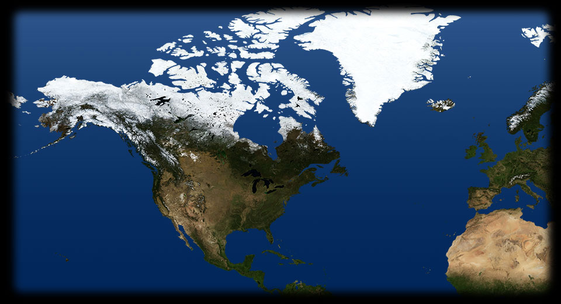

- 300 440
- 380 440
- 310 475
- 345 460
- 280 495
VIRGINIA
Così apparivano a metà Cinquecento gli insediamenti pellerossa: in questa incisione colorata di Theodor De Bry pubblicata nel 1591 vediamo un villaggio indiano fortificato in Florida.FLORIDA
Nella prima metà del 1500 gli europei compiono le prime esplorazioni (le cosiddette entradas) su territorio nordamericano: nel 1513 lo spagnolo Juan Ponce de Leòn approda sulle coste dell’attuale Florida, nel1527 Alvar Nuñez Cabeza de Vaca viaggia dalla Florida al Texas, ed è il primo europeo a vedere i bufali. Nel 1540 Francisco Coronado si spinge fino al Grand Canyon e in Kansas. Durante il viaggio perde numerosi cavalli, che vengono così introdotti in Nord America.ROANOKE
1584: Walter Raleigh sbarca in North Carolina. Con due navi raggiunge l’isola di Roanoke e tenta di fondare una colonia, ma senza risultati. Walter Raleigh porta in Irlanda le prime piante di patata e di tabacco.ST. AUGUSTINE
Nel 1539 Hernando de Soto approda in Florida, si inoltra lungo il fiume Mississippi in cerca di ricchezze. È il primo europeo a esplorare la Florida. Nel 1565 il conquistatore Pedro Menendez de Aviles fonda il primo stanziamento a St. Augustine, la più antica città abitata continuativamente negli Stati Uniti.JAMESTOWN
1607: Jamestown, in Virginia, è la prima colonia inglese di una certa entità<./li>